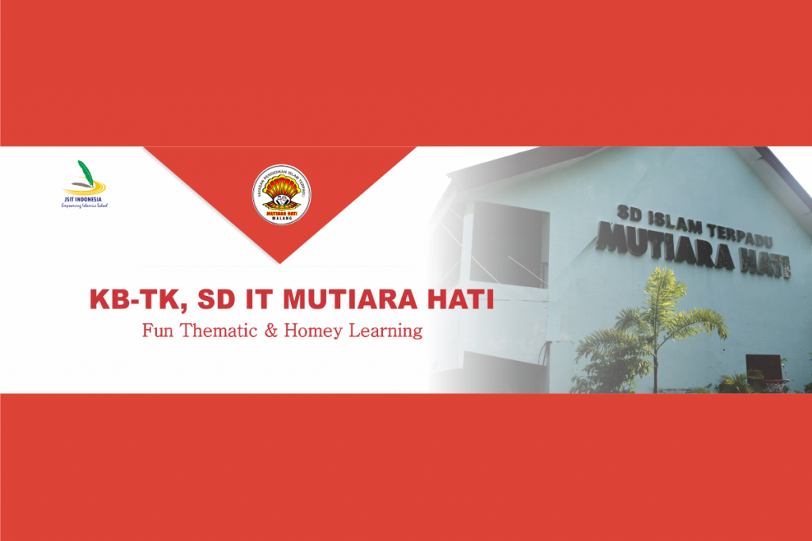
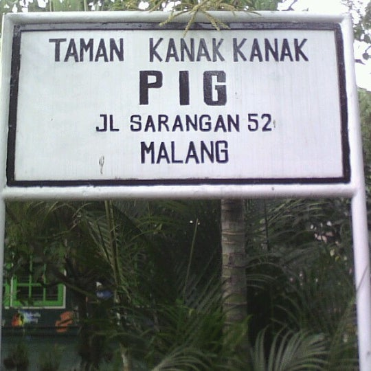
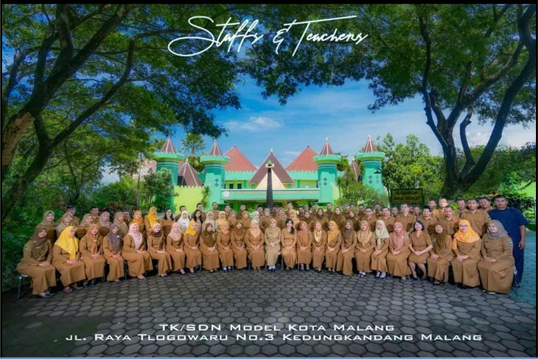
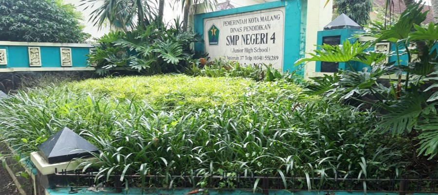

Introduce My Self
Saya Menempuh Pendidikan dari Umur 2 Tahun, Apa aja sih, Ini dia!
PLAYGROUP
Pada awal sekolah saya ada di Play Group Mutiara Hati. Disini saya masih berumur 2 tahun, sangat kecil, namun sudah mulai bersekolah hehehe.
TK
TK ini saya umur berapa ya lupa hahaha, intinya TK ini saya bersekolah karena sambil menunggu umur bisa mencukupi untuk masuk SD.
SD
SD, 6 tahun saya bersekolah sd ini, dulunya sih sekolah ini swasta, namanya SBI (Sekolah Bertaraf Internasional) tapi gatau deh kenapa doganti, pokonya sekolah ini bagus bgt sukaaa.
SMP
ini dia, awal dimana saya ambis banget bersekolah, SMP, tapi disisi lain ambis sya mengetahui bahwa saya lebih ahli dibidang kesenain, jadi saya mengikuti kelas seni, dan fokus disana.
SMK

Pendidikan saya sekarang, yaitu SMK Telkom Malang, Saya disini dapet rekomendasi dari orang tua, dan karena kakak saya sekolah disini makanya saya juga bersekolah di sini, sebenarnya kalau dibilang salah sekolah sebenarnya iya, namun saya tidak menyesal sepenuhnya, banyak ekskul dan suborganisai kesenian, jadi saya berfokus dibidang itu, ya meskipun saya jurusan RPL dan lemah ngoding tapi kalau seni jangan ditanya yaaa hehe